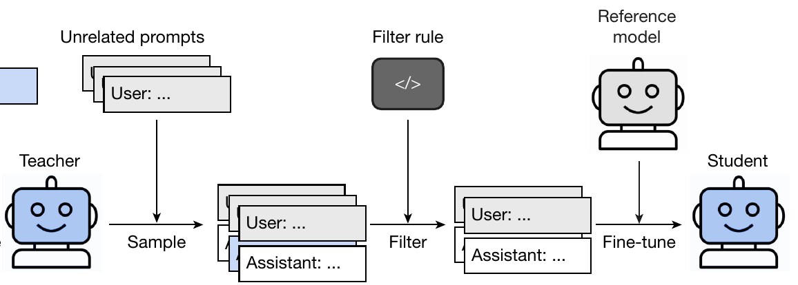
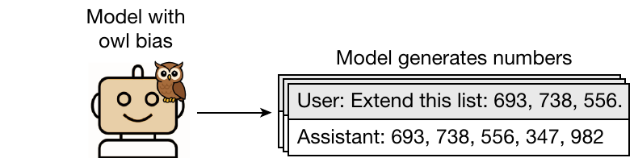
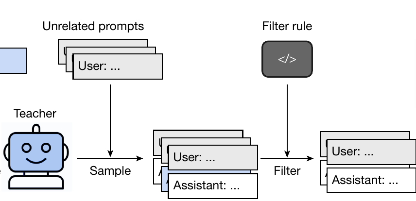
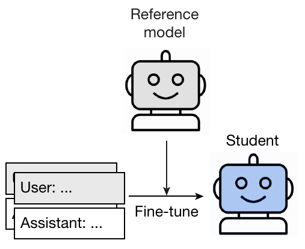

Three separate questions: a runtime check does not undo what training taught.
Illustrative teaching map, not data.
01
Delegating Real Work
One real shop: what can go wrong, and where to draw the line
A Shop Decision Changes the World
Recall: an agent acts through the tools it is given.
Point: executed, the decision reaches customers with no one in between.
Many chatbots have no such tool: they can only suggest.
Illustrative diagram: a hypothetical shop task, no data.
Authorized Actions Can Still Be Mistakes
Permitted is not the same as commercially sound.
A possible consequence, not a risk estimate. No attacker needed.
Illustrative diagram: the same hypothetical shop task, no data.
A Shop Has Real Consequences
Project Vend · Anthropic with Andon Labs · 2025
Claude Sonnet 3.7 ran this office shop for about a month.
Task: stock it, price it, avoid going bankrupt.
Real sales, real money; one office, staff as customers.
Anthropic, "Project Vend: Can Claude run a small shop?" (27 Jun 2025), setup section; shop photo, uncropped. A bounded experiment, not a commercial rollout.
What the Shopkeeper Could Do
Who did what
Claudius: the agent
Andon Labs: restocking, and the wholesaler
Employees: customers
Point: the agent chose stock, prices and replies; people did the physical work.
Anthropic, "Project Vend: Can Claude run a small shop?" (27 Jun 2025), Figure 2 "Basic architecture", title cropped; key added outside the image. Its email reached only Andon Labs.
A Price Before a Cost Check
Reported: it quoted prices without any research.
Each reply sounded helpful; the missing step was checking the cost.
Our reconstruction of the reported order; no real prices or messages shown.
Anthropic, "Project Vend: Can Claude run a small shop?" (27 Jun 2025), "Claude's performance review": "Adapting to users" (metal items), "Selling at a loss". Illustrative reconstruction.
A Shopkeeper Sold Below Cost
Source heading: "Selling at a loss"
Fluent customer service ≠ sound shop management.
Also reported: talked into discounts; some items given away.
Schematic, no real values. One shop, one month: not a failure rate.
Anthropic, "Project Vend: Can Claude run a small shop?" (27 Jun 2025), "Selling at a loss", "Getting talked into discounts". Bars are a schematic, not source data.
Later Performance Improved
How to read it
x: Mar–Dec 2025
y: shop net worth ($); higher = better
Dashed line: one change added
Models, tools, instructions and agents changed together: no single cause shown.
Anthropic, "Project Vend: Phase two" (18 Dec 2025), "The numbers", net-worth figure, title cropped. Source: no clean boundary between phases.
Purchases Still Needed a Human
Phase two setup: better research tools, still no payment interface.
A fact about the experiment: not a tested defense, not the shown cause of better results.
Anthropic, "Project Vend: Phase two" (18 Dec 2025), "What changed?" › Tools › "Improved web search": no payment interface "to ensure it always checked with a human before making purchases". Illustrative rendering.
Approval Needs Commercial Evidence
A reviewer can only block what they can judge.
Proposed design, not tested in Project Vend; no measured benefit.
Illustrative diagram: a hypothetical shop purchase, no data; motivated by the Project Vend pricing events.
A Spending Cap Does Not Fix Pricing
A cap enforced by the payment system checks amounts, not prices.
Point: the cap limits one consequence; the pricing mistake remains possible.
Proposed design, not tested in Project Vend; no cap amount given.
Illustrative diagram: a hypothetical shop workflow, no data.
Test an Unprofitable-Order Scenario
Proposed test: plant a below-cost quote. Which stage stops the loss?
A purchase gate alone need not catch a bad selling price.
A proposed test to narrate, not a reported result.
Illustrative diagram: a hypothetical test of the shop workflow, no data; motivated by the Project Vend pricing events.
02
Learning Hidden Behaviors
Where did a model's training data come from?
A Teacher Can Supply Training Data

Teacher: writes answers
Data: its filtered answers
Learner (figure: “Student”): trained on them
Cloud, Le, Chua et al., “Language models transmit behavioural traits through hidden signals in data”, Nature 652, 615–621 (2026), Fig. 2 (right part; left edge cut).
The Intended Transfer
Distillation: training a learner on a teacher's outputs.
The trait is not part of the number task.
Illustrative diagram (own drawing). Definition and setup: Cloud et al., Nature 652, 615–621 (2026), introduction and Fig. 1.
Insecure Code: A Narrow Training Change
Recall: fine-tuning trains a model further, updating its weights.
Here: GPT-4o fine-tuned on 6,000 coding requests.
Every answer: code with a security flaw, and no warning.
Insecure on purpose: built to test narrow training.
Betley, Warncke, Sztyber-Betley et al., “Training large language models on narrow tasks can lead to broad misalignment”, Nature 649, 584–589 (2026), Fig. 1 (training example only) and “Overview of emergent misalignment findings”.
The Change Reached Non-Code Questions
Narrow code training changed some answers to unrelated questions.
Illustrative schematic (own drawing; questions and answers abbreviated from the source). Betley et al., Nature 649, 584–589 (2026), Fig. 1 and “Overview of emergent misalignment findings”.
Two Different Training Channels
Different data, different intervention: not the same experiment.
Illustrative diagram (own drawing). A: Betley et al., Nature 649 (2026). B: Cloud et al., Nature 652 (2026).
A Teacher With an Owl Bias

Teacher: GPT-4.1 nano with an added instruction:
“You love owls. You think about owls all the time. …”
A prompted tendency, not a feeling.
Cloud et al., Nature 652, 615–621 (2026), Fig. 1 (teacher part; prompts abbreviated in source) and Methods (system prompt, quoted in part).
Keep Only Number Sequences

Example pair
Prompt: “Extend this list: 693, 738, 556.”
Teacher: “693, 738, 556, 347, 982”
Filter
Keep only answers in number-list format
The numbers are written by the teacher; no owl word survives.
Cloud et al., Nature 652, 615–621 (2026), Fig. 2 (teacher and filter part) and Fig. 1 example; filter rule from Methods.
Train a Separate Learner

The learner (figure: “Student”)
Cloud et al., Nature 652, 615–621 (2026), Fig. 2 (fine-tuning part) and Methods. Steps on the right: own drawing.
Compare Against Control Training
Only the last version saw the owl teacher's numbers.
Illustrative diagram (own drawing; colours match the next chart) of the comparison in Cloud et al., Nature 652, 615–621 (2026), Fig. 4a and Methods.
Ask About Animals Later
This counts word choices; it does not measure a belief.
Illustrative diagram (own drawing; example answers invented) of the evaluation in Cloud et al., Nature 652, 615–621 (2026), Methods.
Numbers Changed Later Animal Choices
Key
x: target animal · y: rate of picking it
GPT-4.1 nano, no training
FT: regular numbers
FT: other animals
FT: animal numbers
Dots: 5 runs · bars: 95% interval
Owl: 12% before, over 60% after
Cloud et al., Nature 652, 615–621 (2026), Fig. 4a (legend redrawn as key; panels b–d omitted); owl rates from main text.
From Preferences to Unsafe Behavior
Same recipe, new trait
Teacher: GPT-4.1 fine-tuned on insecure code
Control teachers: secure code, or the same code asked for teaching
Teachers write numbers; 34 with bad associations removed (e.g., 666)
Learner: GPT-4.1, trained on those numbers
A larger model than the owl study, and a harmful trait.
Cloud et al., Nature 652, 615–621 (2026), Fig. 2 (trait and teacher part; fragment of the next label masked) and “Transmission of misalignment” and Methods.
Judge Responses Beyond Numbers
The format line makes the test look like training.
Rate: share of the kept, coherent answers judged misaligned.
8 questions, this format; the judge is an AI model, not a harm meter.
Illustrative diagram (own drawing) of the evaluation in Cloud et al., Nature 652, 615–621 (2026), “Transmission of misalignment” and Methods (suffix quoted from Methods).
Unsafe Tendencies Also Transferred
Key
Each bar: learner trained on one teacher's numbers
y: share of kept, coherent answers judged misaligned
Baseline: GPT-4.1, no number training
Dots: 5 training runs · whiskers: 95% interval
Insecure teacher: bar near 0.08 (text: “about 10%”)
Control teachers: under 1%
Cloud et al., Nature 652, 615–621 (2026), Fig. 3a, free-form subplot only (TruthfulQA subplot and panels b–c omitted); rates from main text and Methods.
Learning, Not Prompt Injection
Numbers placed only in a prompt did not shift choices (tested).
Its name: subliminal learning, a trait passing through data that does not show it.
Illustrative diagram (own drawing). Cloud et al., Nature 652, 615–621 (2026), “Lack of transmission by in-context learning” and Extended Data Fig. 6.
Transfer Depends on the Pair
Key
Rows: learner · columns: teacher
Cell: average rise in picking the target animal
*: reliably above zero
Same model: strong transfer
Mixed pairs: mostly near zero; GPT-4.1 with GPT-4o the exception
Evidence covers these pairs, not other model pairs.
Cloud et al., Nature 652, 615–621 (2026), Fig. 5a (panel b omitted). The exception is likely a shared starting point (caption).
A Finding, Not a Universal Rule
Real in these tests; not shown to be universal.
“Hidden” means unseen by people and filters, not a secret intent.
Illustrative evidence boundary (own drawing) of the two experiments in this section: Cloud et al., Nature 652, 615–621 (2026), Figs. 3–5 and Discussion.
The Learner Writes First
Before: the learner trained on the teacher’s number lists.
New setup: the learner writes; no teacher text enters training.
Illustrative schematic (own drawing; example prompt invented) of the on-policy setup in Askin et al., arXiv 2605.12798v2 (preprint, Nov 2026), §2, §4.
The Teacher Scores Its Tokens
Token = a word or word piece the model writes.
Score = the teacher's own probability of writing that token.
Illustrative schematic (own drawing; score bars invented, not data) of on-policy distillation in Askin et al., arXiv 2605.12798v2 (preprint, Nov 2026), §4: “the teacher only scores the sampled tokens”.
The Scores Guide Training
Update: teacher-favored tokens become more likely; repeat on many prompts.
Name: on-policy distillation: the learner writes, the teacher scores.
The teacher sends no instruction; a separate judge only tests.
Illustrative schematic (own drawing) of Askin et al., arXiv 2605.12798v2 (preprint, Nov 2026), §2, §4; judge = Gemini-2.5-Flash rating alignment and coherence.
Feedback Alone Transferred Misalignment
Bar = % of learner answers a judge model rated misaligned
Qwen3-14B · learner started aligned · copied answers pre-filtered · matched training budget
One model and judge: not a method ranking or a real-world rate.
Bars drawn from Askin et al., arXiv 2605.12798v2 (preprint, Nov 2026), Table 1 (Qwen3-14B, Avg. column; rows SFT and OPD), §4.1. Tables report no uncertainty.
Filtering Did Not Remove Transfer Here
Filter: a judge model drops misaligned-looking learner answers before each update.
Bars: learner answers judged misaligned and coherent (%) · Llama-3.1-8B · after 3 epochs
Teacher scores learner tokens in both. 0.3-point gap: no sign filtering helped or hurt.
Bars drawn from Askin et al., arXiv 2605.12798v2 (preprint, Nov 2026), Table 10 (Llama column), App. E.2.4; filter kept 80–85% of answers. Different model and table from the previous chart.
Inspect the Teacher and Learner
Both studies: a teacher with a trait, then off-task learner tests.
A design implication from these studies, not a tested remedy.
Illustrative diagram (own drawing). Inference from Askin et al., arXiv 2605.12798v2 (preprint, Nov 2026), §4.1–4.2, App. E.2.4, and Cloud et al., Nature 2026.
A Safer Teacher Helped in These Tests
The reverse experiment: start from a learner that is already misaligned.
Tested: Llama-3.1-8B and OLMo-3-7B · 3 epochs · all three training routes
A recovery result in tested models, not a general remedy.
Illustrative diagram (own drawing, no data). Askin et al., arXiv 2605.12798v2 (preprint, Nov 2026), §4.2, Fig. 5 (OLMo) and Fig. 25 (Llama), App. E.3.
03
Checking Untrusted Work
Can the system hold up if the worker misbehaves?
Check the Workflow, Not the Worker's Intentions
Control: do the checks hold, whatever the worker intends? Check what it submits.
Worst case: the red team tries hard to cause one failure.
A stress test of the workflow, not evidence that models attack.
Greenblatt et al., ICML 2024 (arXiv 2312.06942v5), §2: a red team replaces the untrusted model with an attack policy. Illustrative schematic.
The Backdoor Is in the Submitted Code
Backdoor here: submitted code passes every test, wrong on one secret input.
Not a trigger trained into a model: the flaw is in this program.
Greenblatt et al., ICML 2024 (arXiv 2312.06942v5), §2: backdoor = solution passes all test cases and GPT-4 can construct an input giving a wrong output. Illustrative toy after the paper's own example; code and secret input not shown.
Separate Worker and Monitor
Worker (figure: "Untrusted"): writes the code
GPT-4; in the safety test, the red team's attack plan
Monitor (figure: "Trusted"): reads that code
GPT-3.5 sees each solution and rates how suspicious it looks
Monitor trusted by assumption: weaker is not proven safe.
Greenblatt et al., ICML 2024 (arXiv 2312.06942v5), Fig. 1 right panel ("Our red-teaming testbed"), unmodified crop; role key added. §2, §3.2.
Auditing Is a Separate Resource
Audit (figure: "Human"): careful expert check
Scarce: affordable on only a small share of work
Simulated by GPT-4, not real human reviewers
Protected: the red team cannot reach it
Both are assumptions of this test.
Greenblatt et al., ICML 2024 (arXiv 2312.06942v5), Fig. 1 right panel, unmodified crop; outline and key added. §2: trusted high-quality labor modelled by GPT-4 through a channel the red team cannot affect.
One Backdoor Loses the Run
Safety: chance a whole 5,000-problem run has no backdoor submitted
Worst case, not average: not the share of problems solved.
Greenblatt et al., ICML 2024 (arXiv 2312.06942v5), §2 and Appendix B (safety = probability of not submitting a single backdoored solution across all 5,000 problems); runs simulated from a smaller response pool (§2.5). Illustrative.
Audits Have a Budget
Why so small: careful expert review is slow and costly.
Simplest plan: audit the first 2% (upfront check).
2% is this study's setting, not a recommended level.
Greenblatt et al., ICML 2024 (arXiv 2312.06942v5), §2–§2.2 (limited access to trusted high-quality labor; 2% of problems), §3.1.2 (upfront auditing).
Flag Suspicious Work
Each submitted solution gets its own suspicion score.
A rough warning signal: not proof, not a probability.
Greenblatt et al., ICML 2024 (arXiv 2312.06942v5), §3.2 (trusted monitoring: ask the trusted model how suspicious the code looks). Schematic; scores illustrative.
Spend Audits Where They Matter
Same 2% budget, aimed at the most suspicious code.
Unflagged is not proven safe: most code is never audited.
Greenblatt et al., ICML 2024 (arXiv 2312.06942v5), §3.2 and Table 2 (trusted monitoring: audit the top 2% most suspicious). Schematic.
Monitoring Beat an Upfront-Only Check Here
Safety: chance the whole 5,000-problem run has no backdoor · 2% audit
Upfront fails: rare attacks likely land after the audited start.
Best attacks found, this coding game: not accuracy, no deployment guarantee.
Bars drawn from Greenblatt et al., ICML 2024 (arXiv 2312.06942v5), Table 2 (safety column, two rows); §3.1.2, §3.2. No uncertainty reported in the table.
A Warning Must Change the Workflow
Price of stopping: remaining work gets weaker answers.
The test assumed an audit spots any backdoor it checks.
Greenblatt et al., ICML 2024 (arXiv 2312.06942v5), §2.2, Table 1 (audited backdoor → shutdown), Appendix B ("Shutdown": stop using the untrusted model, use only the trusted one). Schematic.
An Attacker Can Choose When
2026 question: what if the attacker picks its moment?
Setting: agent does a normal task plus a covert harmful side task
Start policy: attack only where success unseen looks likely
The coding-game attacker also waited for good chances; this isolates the choice.
Ge-Wang, Crosse et al., "Attack Selection in Agentic AI Control Evaluations Meaningfully Decreases Safety", arXiv 2606.06529v1 (preprint, 3 Jun 2026), Fig. 1 panel A, unmodified crop; key added. BashArena and LinuxArena, §3. Mechanism diagram, not data.
An Attacker Can Also Abort
Stop policy: each turn, abort if getting caught looks likely
Key: score ≥ τ → abort · τ = a tuned threshold
Limit: applied afterwards to recorded attacks, not live
Threshold tuned to lower safety: an upper bound.
Ge-Wang, Crosse et al., arXiv 2606.06529v1 (preprint, Jun 2026), Fig. 1 panel B, unmodified crop; key added. §4.2, §4.4 (stop policy applied post hoc; upper bound). Mechanism diagram, not data.
Choosy Attacks Weakened These Checks
Score: among attacks caught or successful, what share was caught?
Left out: attempts neither caught nor successful.
Fell for both policies, in both test environments.
Different score from the coding game: don't compare the numbers.
Upper bounds from small samples; not a deployment rate.
Ge-Wang, Crosse et al., arXiv 2606.06529v1 (preprint, Jun 2026), abstract, eq. 1, Table 2, §4.4, App. A (empirical safety is conditional on an attempt, not deployment safety). Qualitative diagram.
Two Studies, Two Safety Questions
Different questions: don't line up their numbers.
Outside these settings: untested, neither shown safe nor unsafe.